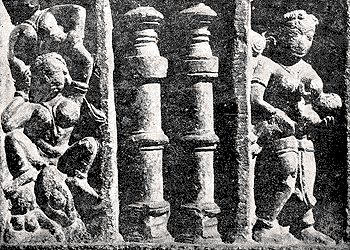

Birth - The Open Body
“At the time of delivery, her legs start shaking; she has pains in her entire lower back and waist area. The backs of the thighs are massaged. The backs of the thighs are massaged. This is done the way jachcha desires. At the time of birth the mother’s body is coming to its fullness – the baby’s head fills the pelvic area (sharer ubharta hai). The baby starts coming out, its head can be seen. At this time we help with our hands. Water keeps on flowing.”
– Mohini Rajasthan
“When jachcha gets tired during birth, we press her belly. This gives her a little support. If the bag of water breaks, then delivery should happen within half an hour otherwise the water may enter into baby’s eyes, nose, mouth and this can be dangerous for the baby. Sometimes after water bag breaks, the head can be seen. We ask the women to push hard to hasten delivery. If she gets tired then we hold her belly and legs and help her to push. She is reassured; she feels that somebody is supporting her. If the head is stuck in the birth canal for a longer time then it gets elongated.” –Kheevni Rjasthan
Knowledge and Skills
“The
Dai massages
jachcha’s perineum with
ghee or oil, so that it becomes flexible.” –Delhi
“When birth begins the
Dai massages the perineum with oil.” –Bihar
“The
Dai massages her, presses her feet against the anus. We make the woman squat on the bricks, the cloth is pressed against the anus and the baby is delivered smoothly. By counter pressure the baby moves downwards, in the birth canal.” –Kesari, Rjasthan
“We put a piece of cloth on the anus and push it upward. This helps the baby to move through the vaginal passage. Women themselves say that they feel pressure there (the anus) so please press it.” –Praveen, Delhi
“See, this is the wonder of nature. At the time, when the baby is coming, even the anus comes down. Its mouth widens. However, the baby cannot come out from there, The woman will die. So a piece of cloth is pressed against the anus. We place it with out heel. Lot of pressure is applied so the anus is raised up.”- Dhapo, Delhi
“No
Dai tells a woman to push unless the contractions are hard.” – Delhi
“When a woman starts getting pains, we massage her back. We give her hot tea or milk to sip. When the pains become strong then we make her squat on the bricks. This position helps putting pressure downwards.” –Kako, Punjab
“When she observes that the woman is ready to deliver, the
Dai ask her to squat on the two bricks, or to lie down. She exercises her judgment. Traditionally squatting is preferred, but if the woman is weak or has given birth to many children or has a history of prolapsed uterus, it is considered better that she lie for birth.” – Delhi
“We make use of various birth positions depending on the mother’s condition. If the woman is made to lie down, is in a direction along the direction of the beam of the house, lengthwise. This positioning places the mother’s body along the same axis as the house beam - straight. So the mother’s body lies in relation to the house as the baby’s body should be within its ‘house’ – the mother.” –Bihar
“When we find the woman absolutely ready to deliver, only then we tell her to push. Many
Dais relate that there are three strong contractions. During the third, baby is delivered.” –Delhi
“I don’t wear gloves as I get confused about what I am feeling. I can usually make out by feeling with my hands. Once I was wearing gloves and the buttocks were coming out. But I thought it was head. Soon I realized what was happening, but everybody else panicked. Still I held the lower back of the jachcha and worked with her, and then the baby came out fine. But because of wearing gloves I got cheated (got wrong information).” –Kaushalaya, Delhi.
“The first child takes a long time. The subsequent children do not take so long. We can tell by feeling at the opening. If it is coming head first then we will feel hair. If it is feet first, then it will feel slippery. –Shakuntala Devi, Bihar
“The
Dai and other women support the
jachcha throughout the birth. If the woman is squatting, then one attendant is at her back, providing pressure at the lower back. The Dai sits in front so that the woman may lean on her during a contraction.” –Delhi
“The jachcha and the
Dai sit in front of each other. When
jachcha is lying down, Dai puts her legs against her inner thighs. This allows her to push more effectively.” – Kaushalaya, Delhi
“Jachcha holds
Dai around the neck and gives a strong push.” –Dhapo, Delhi
“This is my personal experience; I had my baby, squatting on the bricks. You can bear down better that way. It is not that easy lying on a cot.” –Munni, Delhi
“They squat on the bricks only if the baby is not coming out properly, if the pains are not strong enough to push the baby out. If it is happening easily then we make her lie on the cot. When the head is out then oil or ghee is applied on the perineum. The baby’s body slips out properly.” –Vidya Devi, Delhi
“
Dai tells jachcha to sit, one person holds her from the back. The
Dai supports from the front. The woman is asked to lie down if there is a lot of difficulty.” –Bihar
Dai helps the woman with her legs. She sits and places her own legs on the inside portion of the woman’s thighs, so the mother can bear down more effectively, and the birth takes place.” -Rajasthan
“When the head of the baby comes low then if the buttocks are pressed then baby will rotate and come out.” –Kamala, delhi
“We support the woman and let the baby come out on its own,. When we see the head coming then we make her squat and once the head is out we make her lie down.” – Kako, Punjab
“When we see that the head is nearly out but some help is needed, then only we try to make space with our fingers.” –Punjab
Emotional & Social Support
“We believe that the deliver happens smoothly if there is no shouting.” – Tara, Delhi
“The
Dai sometimes pushes along with the woman as if she herself were having a baby.” – Bihar
“When
jachcha starts asking for her mother and father, then we give her reassurance. We tell her that it happens to everyone. It happened to this woman and to that woman. I name women whom she knows and say that I was there for her birth. I tell her that everyone gets these pains. Even I had them. We tell her that she should juts bear it and soon the baby will be delivered. We keep saying “Here comes the baby, here it comes.” We message her and stoke her.” – Kheevni, Rajasthan
“The main words used by the
Dais are “slowly, slowly, slowly” (
dhire, dhire, dhire).” – Bihar
Ritual and Body Imagery
 “During birth, the
Dai prays to Bemata. The belief is that the time is ripe, Bemata will send the baby. No sooner, and no later, it is liberation for the baby freedom from the nine month’s underground or health pond (
nau maheene ka narak kund).” –Delhi
“We bow to Mother Earth (
Dharti Ma), for it is believed that it is earth that is giving birth to the child.
Dharti Ma is like a mother. Like a mother gives birth, the Earth also gives birth.” –Bihar
“There is a separate room for delivery. At the time of delivery the
Dai remembers all her
Devi-Devata. With folded hand we pray respect to
Bemata and
Dharti Mata.” –Kheevni, Rajasthan